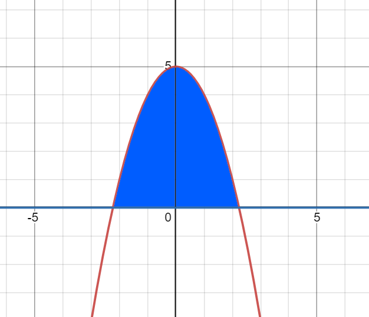
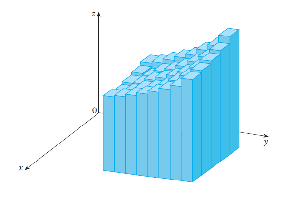
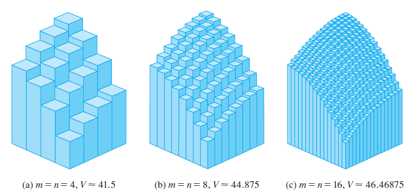
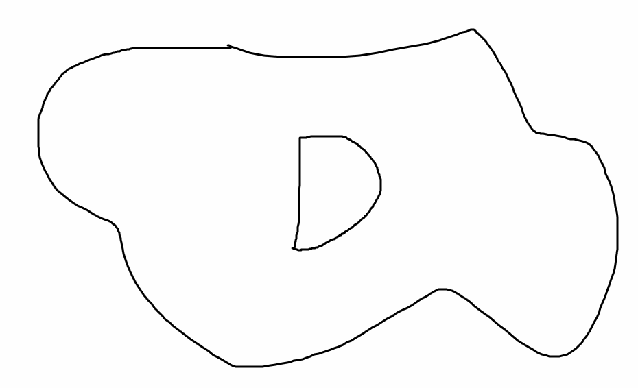
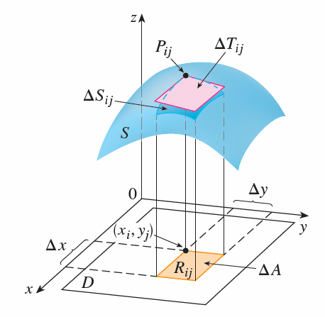
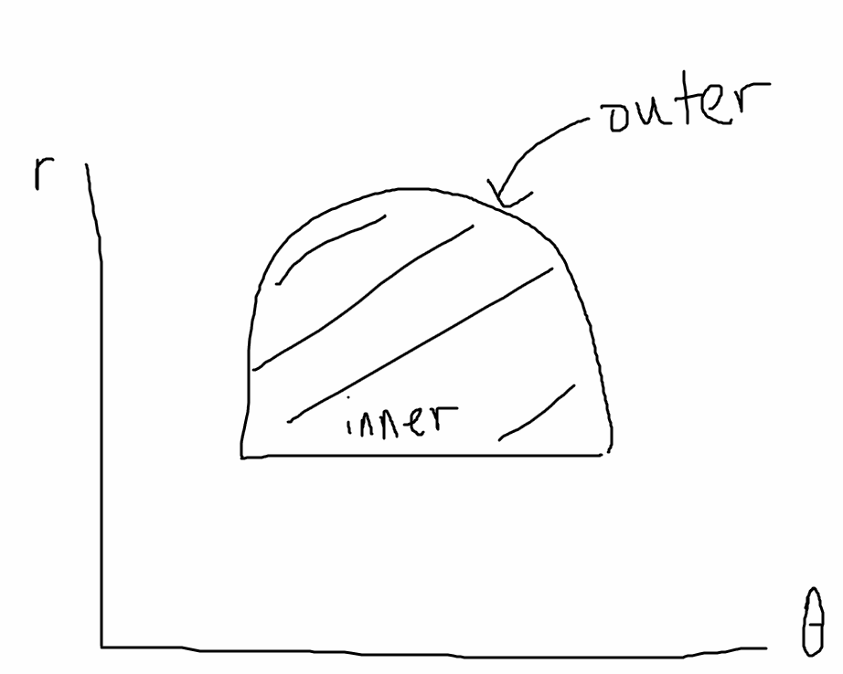
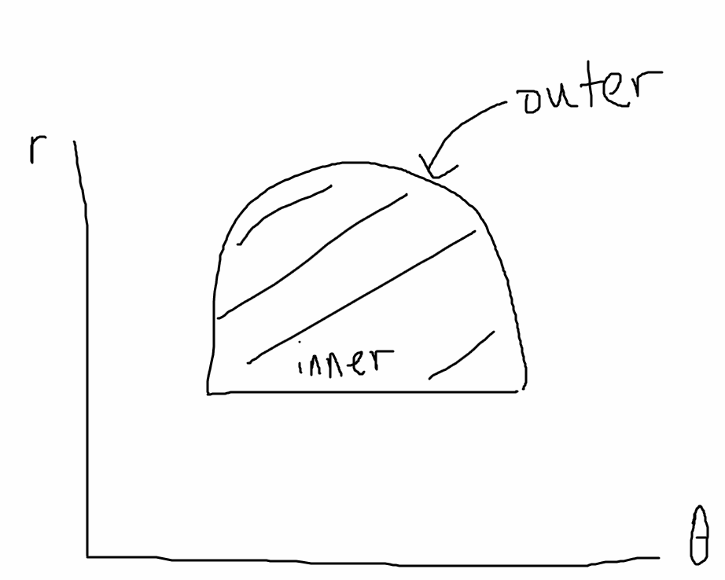

Copyright all rights reserved by Aaron Zheng. This work may not be distributed by anyone without the express consent of the author, who is Aaron Zheng.
Introduction:¶
In \(1D\) and \(2D\) calculus, a common problem that was encountered was solving for the exact area bounded by curves. For example, we may want to find the area bounded by the \(y\)-axis and the curve, sketched below:
\(\(y=-x^2+5\)\)

The idea is that such areas will be computed as the sum of the areas of infinite rectangles, each of height \(y = -x^2+5\) and an infinitesimal width denoted by \(dx\).
 (https://jmahaffy.sdsu.edu/courses/f00/math122/lectures/riemann_sums/images/i_int40.gif)
(https://jmahaffy.sdsu.edu/courses/f00/math122/lectures/riemann_sums/images/i_int40.gif)
As shown in the above image, the sum of the green areas is an approximate answer for the actual area under the red curve. To find the exact area in \(1D\) calculus, we compute the integral of the function for which we want to find areas for, which is expressed as: \(\(\int f(x)dx, Eq1\)\) for some function \(y=f(x)\). The above expression represents an indefinite integral, as the bounds of integration are not defined. In general, the expression: \(\(\int_a^b f(x)dx, Eq2\)\) Represents a definite integral (since bounds are given), and gives the area below the function \(y=f(x)\) as \(x\) varies from \((a,b)\) in the \(x-y\) plane.
The ability to find such areas has many applications. For example, to finding the total work done by a motor in moving a certain object, we can draw a graph of Force over time(as shown below). We have that the work \(W=F\times d\) , which is the product of distance by Force.
 (https://pediaa.com/wp-content/uploads/2015/07/How-to-Calculate-Work-Done_Force_vs_Distance_Graph.jpg)
If we assume a force by distance graph as shown above, then we see that the area above is simply the expression:
\(\(\int_{x_1}^{x_2} F(x) dx\)\)
(https://pediaa.com/wp-content/uploads/2015/07/How-to-Calculate-Work-Done_Force_vs_Distance_Graph.jpg)
If we assume a force by distance graph as shown above, then we see that the area above is simply the expression:
\(\(\int_{x_1}^{x_2} F(x) dx\)\)
For \(1D\)-integrals of a function \(f(x)\), the indefinite integral is equivalent to a function \(F(x)\) which has the unique property that \(F'(x) = f(x) + c\), where \(c\in R\) is some constant.
This unique property is known as the fundamental theorem of calculus. By extension, any integral expression represented by Eq2 above can be written as: \(\(\int_a^b f(x)dx = F(b)-F(a)\)\), since the constant terms would cancel out.
Double Integrals¶
After laying the framework for solving for exact areas within \(1D\) functions, we now attempt to extend this idea to \(2D\) functions.
In essence, an integral of a \(1D\) function is an integral that solves for the exact area underneath a function \(y=f(x)\) across the range \((a,b)\) .The precise bounds of integration can be denoted using only two values, the upper and lower bounds. This is because since the input space of \(f(x)\) is the x-axis, the input space is a line. A subpart of a line is a line segment, which can be precisely defined by two points.
However, we see that \(2D\) functions, unlike \(1D\) functions, take on \(2\) unknown variables. Hence, rather than a line, the input space of \(2D\) functions is a plane, defined by two orthonormal axes that each represent \(1\) unknown. Unlike the \(1D\) bounds of integration, the \(2D\) bounds of integration cannot be defined by just two values. In fact, an infinite amount is needed, since any closed contour shape on a plane can effectively be the bounds of integration for a \(2D\) function.
 (https://i.stack.imgur.com/yn8Ux.png)
(https://i.stack.imgur.com/yn8Ux.png)
Above contours are all valid bounds of integration. As a result, we represent the contour usually using the symbol \(D\), rather than attempt to use specific values to define it.
Unlike the \(1D\) version, the integral of a \(2D\)-function \(z=f(x,y)\) gives the volume, not the area, of the \(3D\) solid that lies below the function \(f(x,y)\).
We can visualise the double integral of a given \(2D\) function \(z=f(x,y)\) as the sum of an infinite amount of volumes of rectangular prisms with their bases lying on the bounds of integration, which each have height given by \(f(x,y)\) and an infinitesimal area of the base, which has length \(dx\) and width \(dy\).  (Calculus Early Trancendentals, James Stewart)
As seen above, each of the heights of the rectangular prisms is given by \(z=f(x,y)\), whilst the area of the bases is given by \(dx dy\). Just like the \(1D\) equivalent, the exact volume of the body below a 2D function is given whenever \(dx,dy\) approches zero, and the number of rectangular prisms we draw approach infinity. As there are more rectangular prisms, the volume we get becomes more accurate. This phenomenon is further illustrated below:  (Calculus Early Trancendentals, James Stewart)
To denote the exact volume, we can write the double integral.
The double integral of a function \(f(x,y)\) over the rectangle \(R = (a,b)\times (c,d)\) is represented by \(\(\int_R\int f(x,y)dA = \lim_{m,n\rightarrow \infty}\Sigma_{i=1}^m\Sigma_{j=1}^nf(x_{ij},y_{ij})\Delta A\)\) Where \(x_{ij}\) ranges from \((a,c)\) in \(m\) fixed intervals of length \(\frac{c-a}{m}\) , while \(y_{ij}\) ranges from \((b,d)\) in \(n\) fixed intervals of length \(\frac{c-a}{n}\).
To evaluate a double integral for the function \(f(x,y)\) over a rectangular region \(D\), where \(x\) is bounded by \((a,c)\) and \(y\) is bounded by \((b,d)\), we can use Fubini's theorem, which states: \(\(\int_D\int f(x,y) = \int_a^c\int_b^d f(x,y)dydx = \int_b^d\int_a^c f(x,y)dxdy\)\) If the integral exists.
We call a function integrable if the above limit always exists and always equals to some value \(L\), regardless of which sets of points \((x_{ij},y_{ij})\) we choose along the \(m\times n\) fixed intervals. See the definition for limits in the Chapter 14 essay.
Application of Double Integrals¶
In \(1D\) calculus, the ability to solve for exact areas under a \(1D\) curve proved invaluable. With this ability, we were able to accurately calculate many values based on other values, such as the exact distance s at given time \(t\) based on velocity or even acceleration over time \(t\) graphs. Alternatively, we were also able to calculate solutions to finding the exact work W done by certain objects over a certain distance, when applying a variable force \(F\).
Similar to its \(1D\) counterpart, double integrals for \(2D\) functions allow us to solve for many different quantities. In the bottom I will list \(3\) examples.
Areas: For a \(2D\) region on the \(x-y\) plane with contour \(D\), see below for example:  We say that its area is equal to the double integral: \(\(S = \int_D\int f(x,y)dxdy\)\) where we have \(f(x,y)=1\) for all points \((x,y)\in R^2\).
The proof of this claim is that \(S\) represents the volume of the sum of the infinite rectangular prisms with base \(dxdy\), lying on \(D\) with height \(f(x,y)\). But \(f(x,y)=1\) for all points, so essentially this is just the volume of the prism solid with \(D\) as base, and extruded a height of \(1\). Hence,
Volume of prism solid = (Area of base) \(\times\) (Height)
Hence the area of \(D\) is equal to the double integral expression.
Mass of 2D objects: Assume we have a \(2D\) object \(O\) which contains mass, and we want to find the amount of mass in \(O\). We know that \(O\) is of the shape represented by a certain contour \(D\), and at each point \((x,y)\) along \(D\), the density (mass/unit area) is \(p(x,y)\)
We can write the mass of \(O\) contributed by each infinitesimal rectangle with dimensions \((dx,dy)\) and position \((x_k,y_k)\) as the following: \(\(p(x_k,y_k)\ dxdy\)\) Adding up all such potential rectangles that occupy the contour \(D\), we have that the total mass of \(O\) is: \(\(\int_D\int p(x,y)\ dxdy\)\) Surface area of bodies: Sometimes, it may be useful to us to find the surface area of a \(3D\) curve, such as the surface area of a sphere. In such a situation, what we would do is utilise double integrals.  (Calculus Early Trancendentals, James Stewart)
We see that, from the above diagram, to find the exact surface area of an arbitrary curved surface in \(3D\) we first must find the surface area of a tiny part of the curve in question, as denoted by the pink area above. We lay a few observations.
1) As \(\Delta x,\Delta y\) become small, the pink region approximates to a parallelogram tilted in 3D space(i.e. not flat, not parallel to \(x-y\) axis) 2) This parallelogram has two adjacent sides that can be defined by the following vectors: 1) \(\vec{a} = \Delta x \cdot i + f_x(x,y)(\Delta x) k\) 2) \(\vec{b} = \Delta y \cdot j + f_y(x,y)(\Delta y) k\)
Using observation 2, we can get the surface area when \(\Delta x,\Delta y\) converges to \((0,0)\) approach: \(\(|\vec{a}\times \vec{b}| = \begin{bmatrix}i&&j&&k\\\Delta x&&0&&f_x(x,y)\Delta x\\0&&\Delta y&&f_y(x,y)\Delta y\end{bmatrix}\)\) \(=|(-f_x(x,y)\Delta x \Delta y) i + (-f_y(x,y)\Delta y \Delta x) j + (\Delta x \Delta y) k|\) \(=\sqrt{f_x(x,y)^2 + f_y(x,y)^2 + 1}dxdy = \sqrt{f_x(x,y)^2 + f_y(x,y)^2 + 1}dA\)
So, the total surface area of a function \(z=f(x,y)\), where \((x,y)\in D\), is basically the expression: \(\(S = \int_D \int \sqrt{f_x(x,y)^2 + f_y(x,y)^2 + 1}dxdy\)\)
Triple Integrals:¶
Sometimes, we need to integrate a shape not just over two variables(ranges), but integrate over up to three variables. An example of such a situation would be when we want to find the total mass of a three dimensional region \(D\), where the mass at point \((x,y,z)\) is defined by the function \(k=f(x,y,z)\), where \((x,y,z)\) is within the bounds \((a,d),(b,e),(c,g)\) respectively: \((a,b,c,d,e,g) \in R\) .
For such a case, the \(3D\) equivalent of Fubini's theorem applies, where we have: \(\(\int_D\int\int f(x,y,z)dV=\int_a^d\int_b^e\int_c^g f(x,y,z) dzdydx\)\) if the limit exists.
Just like for the \(2D\) case, the \(3D\) version of integration can be very useful and has many applications, such as when solving for the mass or volume of a \(3D\) body.
It can also be used to solve for the center of mass \((x_c,y_c,z_c)\) of an object \(O\) defined on a \(3D\) region \(D\), which can be expressed as follows: \(\((x_c,y_c,z_c)\)\) \(\(=(\int_D\int\int xp(x,y,z)dV, \int_D\int\int yp(x,y,z)dV, \int_D\int\int yp(x,y,z)dV)\)\)
Change of Variables in Multiple Integrals¶
It is all and well that integrals have many real-life applications. However, sometimes the computation of certain integrals have challenges. In some cases the bounds of integration is arbitrary and hard to calculate. For \(1D\) calculus, we change bounds of integration through substitution as follows: \(\(\int_a^b f(x)dx = \int_c^d f(g(u))g'(u)du\)\) where \((c,d)\) is the corresponding bounds such that \((g(c),g(d))=(a,b)\)
On occasion, the change of variables framework is also very useful in multivariable functions. For example, lets say we want to use double integrals to find the area of the green region below:
 (https://dcvp84mxptlac.cloudfront.net/diagrams2/CALC2-6-7-X_1.jpg)
One look at the above diagram and we see that it is very difficult, nearly impossible to establish the boundary conditions with respect to \((x,y\)). However, when we convert to polar coordinates \((r,\theta)\) , which are defined as:
\(r = x^2+y^2\)
\(\theta = arctan(\frac{y}{x})\)
We get that the above function is very straight forward in the \(r-\theta\) plane, just a function like this:

Let us assume that the inner \(r=r_0\), and the outer \(r\) is a function of \(\theta\), \(r_o(\theta)\) We can easily solve for the area in the above diagram in such a case, which can be expressed as a very simple integral.
\(\(S=\int_{\alpha}^{\beta}\int_{r_0}^{r_o(\theta)} drd\theta\)\)
However, the problem is that the above sketched area doesn't correspond to the area of the green area above exactly. This is because, when trying to change the variables of integration to the polar coordinate system, we transformed the green region into the region sketched above. In other words, we want to find the area of the green region, but the above integral doesn't exactly calculate that. Luckily, such change of variables transformations of areas always scales each area in the original coordinate system by a certain factor, which we will attempt to find.
(https://dcvp84mxptlac.cloudfront.net/diagrams2/CALC2-6-7-X_1.jpg)
One look at the above diagram and we see that it is very difficult, nearly impossible to establish the boundary conditions with respect to \((x,y\)). However, when we convert to polar coordinates \((r,\theta)\) , which are defined as:
\(r = x^2+y^2\)
\(\theta = arctan(\frac{y}{x})\)
We get that the above function is very straight forward in the \(r-\theta\) plane, just a function like this:

Let us assume that the inner \(r=r_0\), and the outer \(r\) is a function of \(\theta\), \(r_o(\theta)\) We can easily solve for the area in the above diagram in such a case, which can be expressed as a very simple integral.
\(\(S=\int_{\alpha}^{\beta}\int_{r_0}^{r_o(\theta)} drd\theta\)\)
However, the problem is that the above sketched area doesn't correspond to the area of the green area above exactly. This is because, when trying to change the variables of integration to the polar coordinate system, we transformed the green region into the region sketched above. In other words, we want to find the area of the green region, but the above integral doesn't exactly calculate that. Luckily, such change of variables transformations of areas always scales each area in the original coordinate system by a certain factor, which we will attempt to find.
Let us assume that we have a region of area in the original \(x-y\) coordinate system denoted by \(dxdy\). We want to find \(J\) , denoted as the Jacobian, such that: \(\(dxdy=J\times drd\theta\)\) for all points \((x,y)\). Given that: \(\(x(r,\theta) = r\cos(\theta), y(r,\theta) = r\sin(\theta)\)\) We have that: \(dx = -r\sin(\theta)d\theta + cos(\theta)dr = <-r\sin(\theta), cos(\theta)>\cdot <d\theta, dr>\) \(dy = r\cos(\theta)d\theta + \sin(\theta)dr = <r\cos(\theta), \sin(\theta)>\cdot <d\theta, dr>\)
So, \(dxdy\) \(= <-r\sin(\theta), cos(\theta)>\cdot <d\theta, dr>\cdot <r\cos(\theta), \sin(\theta)>\cdot <d\theta, dr>\) \(= <-r\sin(\theta), cos(\theta)>\cdot <r\cos(\theta), \sin(\theta)> \cdot (<d\theta, dr>)^2\) \(=\begin{bmatrix}-r\sin(\theta) && r\cos(\theta) \\ \cos(\theta) && \sin(\theta) \end{bmatrix}\cdot (d\theta dr)\) \(=rd\theta dr\)
So, \(dxdy = rdrd\theta\). We can derive from this that the scaling factor we are looking for is \(J\), represented by \(r\). So, we have that the integral expression representing the green area is: \(\(S=\int_{\alpha}^{\beta}\int_{r_0}^{r_o(\theta)} rdrd\theta\)\) To extend this idea, the Jacobian of any tranformation \(T\) which transforms the coordinate system \((x,y\)) to \((u,v)\) is essentially the value of the expression: \(\(J = \frac{\partial (x,y)}{\partial (u,v)} = det(\begin{bmatrix}\frac{\partial x}{\partial u}&&\frac{\partial x}{\partial v}\\\frac{\partial y}{\partial u}&&\frac{\partial y}{\partial v}\end{bmatrix})\)\) With this, we can find the double integral of any region on the \(x-y\) plane by tranforming it to another coordinate system represented by \(u-v\) plane, as long as we have \(x=f(u,v), y=g(u,v)\).